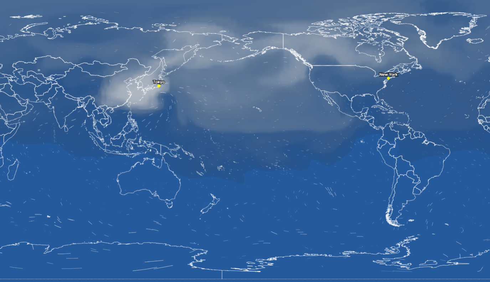

Raindrop's Journey Across the Globe
Can a single raindrop falling in Japan reach all the way to Brazil—the exact opposite side of the Earth? How long does it take to travel across the globe, and what shifting patterns does it form across the sky?
Tracking the Atmospheric Path of Moisture
To trace this moisture—which behaves like streams of ink diffusing across the sky—the Yoshimura Lab simulated global moisture paths using IsoGSM, a Global Spectral Model integrated with water isotope tracking.
By isolating and tracking the air evaporating from the Japan region (30°-45° N, 130°-145° E), the team ran global simulations to map where and when this moisture travels, mixes, and precipitates until it finally arrives at the exact opposite side of the world in Brazil (30°-45° S, 35°-50° W).
The simulation incorporates a specific mixing rule: every time the tracked moisture falls as rain along its route, it mixes completely with the local water on the ground. When it rises back into the sky through evaporation, it continues its journey as a more diluted blend. This method allows scientists to measure exactly how much of the original water from Japan survives the long trip to Brazil, and how much of it gets diluted by the rest of the world along the way.

Winter Departures Are Fast, Summer Departures Are Slow
Water leaving Japan in the winter reaches Brazil much faster than water leaving in the summer. On average, the winter journey takes around 40 days, while the summer journey stretches to 70 days or longer.
Summer Departure

Winter Departure

This seasonal difference is driven by the movement of the Intertropical Convergence Zone (ITCZ), a massive global belt of low pressure. During the summer, the ITCZ shifts northward, pulling powerful trade winds across the equator from the Southern Hemisphere into the Northern Hemisphere. This acts like an invisible barrier in the air, making it difficult for summer moisture from Japan to cross the equator and move south toward Brazil, severely delaying its journey.
Redefining Distance From the Perspective of Water
This model remaps the connection between Japan and the rest of the world, proving that atmospheric travel times are often entirely independent of physical distance.
The Summer Contrast: Even though Taiwan is physically much closer to Japan, it takes an average of 11 days for Japanese moisture to travel there in the summer. Meanwhile, driven by the Westerlies and the North Pacific Jet Stream, that same moisture can rocket across the vast Pacific Ocean and reach Western Canada in just 7 days.
The Winter Shift: These atmospheric patterns flip dramatically with the seasons. In the winter, the powerful East Asian Winter Monsoon creates a direct, high-speed aerial highway, dropping the travel time from Japan to Taiwan down to just 3 days.
By looking at the world through the travel of a raindrop, we begin to see a planet intimately connected as a dynamic Earth system. It is a world where the heat of the oceans, the topography of the land, and the shifting currents of the atmosphere continuously interact—weaving the entire globe into a single, living, water-circulating organism.
Louison Prevost-Bonnefille, Hyunjung Kim
Xiaoyang Li, Kei Yoshimura